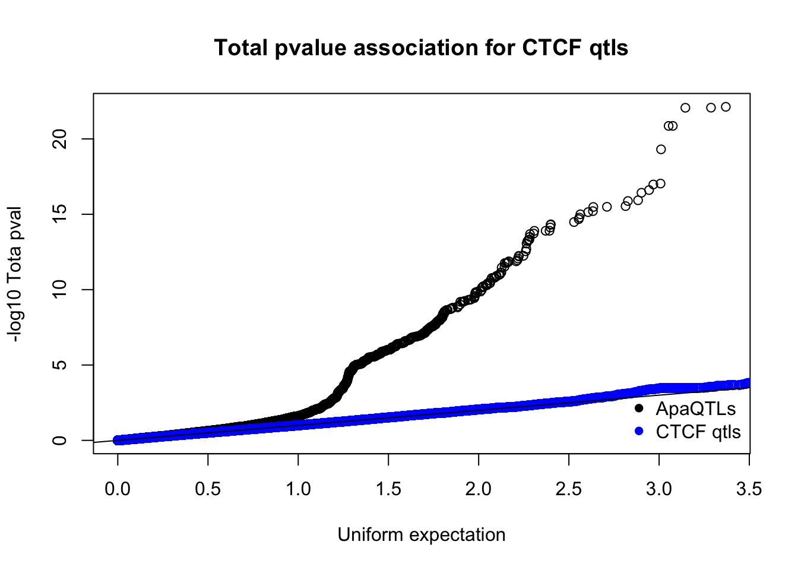
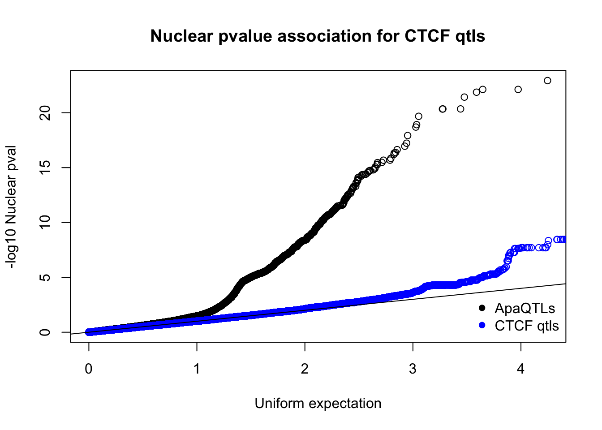
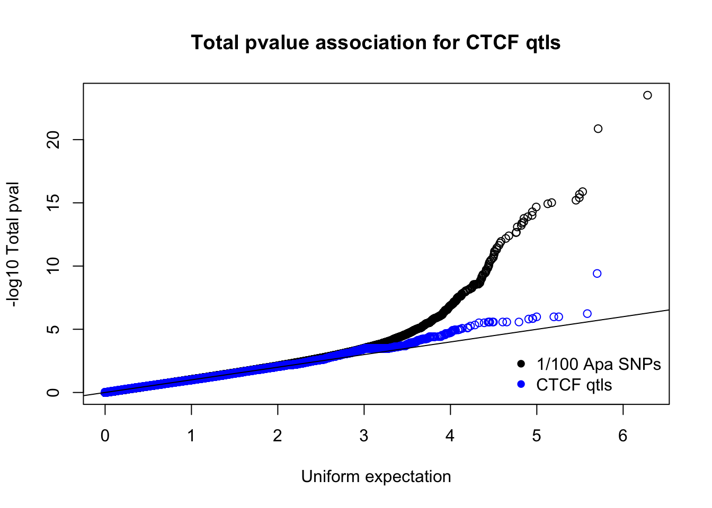
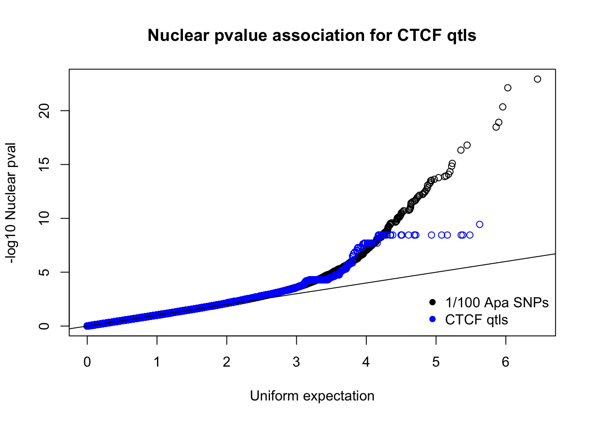

Last updated: 2019-03-19
Checks: 6 0
Knit directory: threeprimeseq/analysis/
This reproducible R Markdown analysis was created with workflowr (version 1.2.0). The Report tab describes the reproducibility checks that were applied when the results were created. The Past versions tab lists the development history.
Great! Since the R Markdown file has been committed to the Git repository, you know the exact version of the code that produced these results.
Great job! The global environment was empty. Objects defined in the global environment can affect the analysis in your R Markdown file in unknown ways. For reproduciblity it’s best to always run the code in an empty environment.
The command set.seed(12345) was run prior to running the code in the R Markdown file. Setting a seed ensures that any results that rely on randomness, e.g. subsampling or permutations, are reproducible.
Great job! Recording the operating system, R version, and package versions is critical for reproducibility.
Nice! There were no cached chunks for this analysis, so you can be confident that you successfully produced the results during this run.
Great! You are using Git for version control. Tracking code development and connecting the code version to the results is critical for reproducibility. The version displayed above was the version of the Git repository at the time these results were generated.
Note that you need to be careful to ensure that all relevant files for the analysis have been committed to Git prior to generating the results (you can use wflow_publish or wflow_git_commit). workflowr only checks the R Markdown file, but you know if there are other scripts or data files that it depends on. Below is the status of the Git repository when the results were generated:
Ignored files:
Ignored: .DS_Store
Ignored: .Rhistory
Ignored: .Rproj.user/
Ignored: data/.DS_Store
Ignored: data/perm_QTL_trans_noMP_5percov/
Ignored: output/.DS_Store
Untracked files:
Untracked: KalistoAbundance18486.txt
Untracked: analysis/4suDataIGV.Rmd
Untracked: analysis/DirectionapaQTL.Rmd
Untracked: analysis/EvaleQTLs.Rmd
Untracked: analysis/YL_QTL_test.Rmd
Untracked: analysis/groSeqAnalysis.Rmd
Untracked: analysis/ncbiRefSeq_sm.sort.mRNA.bed
Untracked: analysis/snake.config.notes.Rmd
Untracked: analysis/verifyBAM.Rmd
Untracked: analysis/verifybam_dubs.Rmd
Untracked: code/PeaksToCoverPerReads.py
Untracked: code/strober_pc_pve_heatmap_func.R
Untracked: data/18486.genecov.txt
Untracked: data/APApeaksYL.total.inbrain.bed
Untracked: data/AllPeak_counts/
Untracked: data/ApaQTLs/
Untracked: data/ApaQTLs_otherPhen/
Untracked: data/CTCF/
Untracked: data/ChromHmmOverlap/
Untracked: data/DistTXN2Peak_genelocAnno/
Untracked: data/EmpiricalDists/
Untracked: data/FeatureoverlapPeaks/
Untracked: data/GM12878.chromHMM.bed
Untracked: data/GM12878.chromHMM.txt
Untracked: data/GWAS_overlap/
Untracked: data/LianoglouLCL/
Untracked: data/LocusZoom/
Untracked: data/LocusZoom_Unexp/
Untracked: data/LocusZoom_proc/
Untracked: data/MatchedSnps/
Untracked: data/NucSpecQTL/
Untracked: data/NuclearApaQTLs.txt
Untracked: data/PeakCounts/
Untracked: data/PeakCounts_noMP_5perc/
Untracked: data/PeakCounts_noMP_genelocanno/
Untracked: data/PeakUsage/
Untracked: data/PeakUsage_noMP/
Untracked: data/PeakUsage_noMP_GeneLocAnno/
Untracked: data/PeaksUsed/
Untracked: data/PeaksUsed_noMP_5percCov/
Untracked: data/PolyA_DB/
Untracked: data/QTL_overlap/
Untracked: data/RNAdecay/
Untracked: data/RNAkalisto/
Untracked: data/RefSeq_annotations/
Untracked: data/Replicates_usage/
Untracked: data/Signal_Loc/
Untracked: data/TotalApaQTLs.txt
Untracked: data/Totalpeaks_filtered_clean.bed
Untracked: data/UnderstandPeaksQC/
Untracked: data/WASP_STAT/
Untracked: data/YL-SP-18486-T-combined-genecov.txt
Untracked: data/YL-SP-18486-T_S9_R1_001-genecov.txt
Untracked: data/YL_QTL_test/
Untracked: data/apaExamp/
Untracked: data/apaExamp_proc/
Untracked: data/apaQTL_examp_noMP/
Untracked: data/bedgraph_peaks/
Untracked: data/bin200.5.T.nuccov.bed
Untracked: data/bin200.Anuccov.bed
Untracked: data/bin200.nuccov.bed
Untracked: data/clean_peaks/
Untracked: data/comb_map_stats.csv
Untracked: data/comb_map_stats.xlsx
Untracked: data/comb_map_stats_39ind.csv
Untracked: data/combined_reads_mapped_three_prime_seq.csv
Untracked: data/diff_iso_GeneLocAnno/
Untracked: data/diff_iso_proc/
Untracked: data/diff_iso_trans/
Untracked: data/eQTL_inAPA/
Untracked: data/eQTLs_Lietal/
Untracked: data/ensemble_to_genename.txt
Untracked: data/example_gene_peakQuant/
Untracked: data/explainProtVar/
Untracked: data/filtPeakOppstrand_cov_noMP_GeneLocAnno_5perc/
Untracked: data/filtered_APApeaks_merged_allchrom_refseqTrans.closest2End.bed
Untracked: data/filtered_APApeaks_merged_allchrom_refseqTrans.closest2End.noties.bed
Untracked: data/first50lines_closest.txt
Untracked: data/gencov.test.csv
Untracked: data/gencov.test.txt
Untracked: data/gencov_zero.test.csv
Untracked: data/gencov_zero.test.txt
Untracked: data/gene_cov/
Untracked: data/joined
Untracked: data/leafcutter/
Untracked: data/merged_combined_YL-SP-threeprimeseq.bg
Untracked: data/molPheno_noMP/
Untracked: data/mol_overlap/
Untracked: data/mol_pheno/
Untracked: data/nom_QTL/
Untracked: data/nom_QTL_opp/
Untracked: data/nom_QTL_trans/
Untracked: data/nuc6up/
Untracked: data/nuc_10up/
Untracked: data/other_qtls/
Untracked: data/pQTL_inAPA/
Untracked: data/pQTL_otherphen/
Untracked: data/pacbio_cov/
Untracked: data/peakPerRefSeqGene/
Untracked: data/peaks4DT/
Untracked: data/perm_QTL/
Untracked: data/perm_QTL_GeneLocAnno_noMP_5percov/
Untracked: data/perm_QTL_GeneLocAnno_noMP_5percov_3UTR/
Untracked: data/perm_QTL_diffWindow/
Untracked: data/perm_QTL_opp/
Untracked: data/perm_QTL_trans/
Untracked: data/perm_QTL_trans_filt/
Untracked: data/protAndAPAAndExplmRes.Rda
Untracked: data/protAndAPAlmRes.Rda
Untracked: data/protAndExpressionlmRes.Rda
Untracked: data/reads_mapped_three_prime_seq.csv
Untracked: data/smash.cov.results.bed
Untracked: data/smash.cov.results.csv
Untracked: data/smash.cov.results.txt
Untracked: data/smash_testregion/
Untracked: data/ssFC200.cov.bed
Untracked: data/temp.file1
Untracked: data/temp.file2
Untracked: data/temp.gencov.test.txt
Untracked: data/temp.gencov_zero.test.txt
Untracked: data/threePrimeSeqMetaData.csv
Untracked: data/threePrimeSeqMetaData55Ind.txt
Untracked: data/threePrimeSeqMetaData55Ind.xlsx
Untracked: data/threePrimeSeqMetaData55Ind_noDup.txt
Untracked: data/threePrimeSeqMetaData55Ind_noDup.xlsx
Untracked: data/threePrimeSeqMetaData55Ind_noDup_WASPMAP.txt
Untracked: data/threePrimeSeqMetaData55Ind_noDup_WASPMAP.xlsx
Untracked: manuscript/
Untracked: output/LZ/
Untracked: output/deeptools_plots/
Untracked: output/picard/
Untracked: output/plots/
Untracked: output/qual.fig2.pdf
Unstaged changes:
Modified: analysis/28ind.peak.explore.Rmd
Modified: analysis/CompareLianoglouData.Rmd
Modified: analysis/NewPeakPostMP.Rmd
Modified: analysis/NuclearSpecQTL.Rmd
Modified: analysis/PeakToXper.Rmd
Modified: analysis/apaQTLoverlapGWAS.Rmd
Modified: analysis/characterize_apaQTLs.Rmd
Modified: analysis/cleanupdtseq.internalpriming.Rmd
Modified: analysis/coloc_apaQTLs_protQTLs.Rmd
Modified: analysis/dif.iso.usage.leafcutter.Rmd
Modified: analysis/diff_iso_pipeline.Rmd
Modified: analysis/explainpQTLs.Rmd
Modified: analysis/explore.filters.Rmd
Modified: analysis/fixBWChromNames.Rmd
Modified: analysis/flash2mash.Rmd
Modified: analysis/initialPacBioQuant.Rmd
Modified: analysis/mispriming_approach.Rmd
Modified: analysis/overlapMolQTL.Rmd
Modified: analysis/overlapMolQTL.opposite.Rmd
Modified: analysis/overlap_qtls.Rmd
Modified: analysis/peakOverlap_oppstrand.Rmd
Modified: analysis/peakQCPPlots.Rmd
Modified: analysis/pheno.leaf.comb.Rmd
Modified: analysis/pipeline_55Ind.Rmd
Modified: analysis/swarmPlots_QTLs.Rmd
Modified: analysis/test.max2.Rmd
Modified: analysis/test.smash.Rmd
Modified: analysis/understandPeaks.Rmd
Modified: analysis/unexplainedeQTL_analysis.Rmd
Modified: code/Snakefile
Note that any generated files, e.g. HTML, png, CSS, etc., are not included in this status report because it is ok for generated content to have uncommitted changes.
These are the previous versions of the R Markdown and HTML files. If you’ve configured a remote Git repository (see ?wflow_git_remote), click on the hyperlinks in the table below to view them.
| File | Version | Author | Date | Message |
|---|---|---|---|---|
| Rmd | e15a531 | Briana Mittleman | 2019-03-19 | plot all tested snps |
| html | dbfcfd1 | Briana Mittleman | 2019-03-19 | Build site. |
| Rmd | b562a7e | Briana Mittleman | 2019-03-19 | add qqplots |
| html | 9aa1003 | Briana Mittleman | 2019-03-19 | Build site. |
| Rmd | d924da6 | Briana Mittleman | 2019-03-19 | add ctcf analysis |
I will look at ctcf data too see if this insulator element could act as a mechanism for apa qtls. This is in line with the kinetic model. We know CTCF binding slows polymerase. We are testing if this slow down is associated with APA as well.
The ctcf data I will use can be found at https://www.ncbi.nlm.nih.gov/pubmed/27010758
I will download the normalized phenotype file each row a binding region and each column a sample.
The regions are defined as chromosome, start, end in hg19. I will format this file so I have an ID like i do for the APA analysis.
library(tidyverse)── Attaching packages ───────────────────────────────────────────────────────────────────────────────────── tidyverse 1.2.1 ──✔ ggplot2 3.1.0 ✔ purrr 0.3.1
✔ tibble 2.0.1 ✔ dplyr 0.8.0.1
✔ tidyr 0.8.3 ✔ stringr 1.4.0
✔ readr 1.3.1 ✔ forcats 0.4.0 Warning: package 'tibble' was built under R version 3.5.2Warning: package 'tidyr' was built under R version 3.5.2Warning: package 'purrr' was built under R version 3.5.2Warning: package 'dplyr' was built under R version 3.5.2Warning: package 'stringr' was built under R version 3.5.2Warning: package 'forcats' was built under R version 3.5.2── Conflicts ──────────────────────────────────────────────────────────────────────────────────────── tidyverse_conflicts() ──
✖ dplyr::filter() masks stats::filter()
✖ dplyr::lag() masks stats::lag()library(workflowr)This is workflowr version 1.2.0
Run ?workflowr for help getting startedlibrary(data.table)Warning: package 'data.table' was built under R version 3.5.2
Attaching package: 'data.table'The following objects are masked from 'package:dplyr':
between, first, lastThe following object is masked from 'package:purrr':
transposelibrary(cowplot)Warning: package 'cowplot' was built under R version 3.5.2
Attaching package: 'cowplot'The following object is masked from 'package:ggplot2':
ggsaveFirst, I will look at overlap between the PAS and these CTCF sites. I can do this with deep tools by making a bed file.
CTCF2bed.py
CTCF=open("/project2/gilad/briana/threeprimeseq/data/CTCF/CTCFbinding.csv", "r")
bedFile=open("/project2/gilad/briana/threeprimeseq/data/CTCF/CTCFbindingLoc.bed", "w")
for i,ln in enumerate(CTCF):
if i >0:
chrm=ln.split(",")[0]
start=ln.split(",")[1]
end=ln.split(",")[2]
bedFile.write("%s\t%s\t%s\n"%(chrm, start, end))
bedFile.close()Deeptools plots:
TotandNucAtCTCF_DTPlot_noMPFilt.sh
#!/bin/bash
#SBATCH --job-name=TotandNucAtCTCF_DTPlot_noMPFilt
#SBATCH --account=pi-yangili1
#SBATCH --time=24:00:00
#SBATCH --output=TotandNucAtCTCF_DTPlot_noMPFilt.out
#SBATCH --error=TotandNucAtCTCF_DTPlot_noMPFilt.err
#SBATCH --partition=bigmem2
#SBATCH --mem=100G
#SBATCH --mail-type=END
module load Anaconda3
source activate three-prime-env
computeMatrix reference-point -S /project2/gilad/briana/threeprimeseq/data/mergedBW/Total_MergedBamCoverage.bw /project2/gilad/briana/threeprimeseq/data/mergedBW/Nuclear_MergedBamCoverage.bw -R /project2/gilad/briana/threeprimeseq/data/CTCF/CTCFbindingLoc.bed -b 1000 -a 1000 -out /project2/gilad/briana/threeprimeseq/data/CTCF/TotalandNucAtCTCF.gz
plotHeatmap --sortRegions descend -m /project2/gilad/briana/threeprimeseq/data/CTCF/TotalandNucAtCTCF.gz --refPointLabel "CTCF" --plotTitle "Combined 3' at CTCF" --heatmapHeight 7 --colorMap YlGnBu -out /project2/gilad/briana/threeprimeseq/data/CTCF/TotalandNucAtCTCF.pngNo enrichemnt
I want to reformat the phenotypes, this is easiest in R.
CTCF=read.csv("../data/CTCF/CTCFbinding.csv", header=T) %>% mutate(ID= paste(chrm,start, end, sep=":")) %>% dplyr::select(chrm, start, end, ID, contains("NA"))
write.table(CTCF, file="../data/CTCF/CTCFbinding.pheno.bed",col.names = T, row.names = F, quote = F, sep="\t" )put on midway
#remove header
sort -k1,1 -k2,2n CTCFbinding.pheno.bed > CTCFbinding.pheno.sort.bed
#add header
bgzip CTCFbinding.pheno.sort.bed
tabix CTCFbinding.pheno.sort.bed.gz
#get the PCs
#midway1
#export PATH=/project/gilad/software/midway1/qtltools-1.0:$PATH
QTLtools pca --bed /project2/gilad/briana/threeprimeseq/data/CTCF/CTCFbinding.pheno.sort.bed.gz --scale --center --out /project2/gilad/briana/threeprimeseq/data/CTCF/CTCFbinding.pheno.sort.bed.PC.out
head -n 6 CTCFbinding.pheno.sort.bed.PC.out.pca > CTCFbinding.pheno.sort.bed.5PCs.out.pcaMake samples file:
smaplesCTCF.py
ctcf=open("/project2/gilad/briana/threeprimeseq/data/CTCF/CTCFbinding.csv", "r")
sampleFile=open("/project2/gilad/briana/threeprimeseq/data/CTCF/samples.txt", "w")
samplesVCF=open("/project2/gilad/briana/YRI_geno_hg19/vcf.samples.txt", "r")
samplesoK={}
for ln in samplesVCF:
samList=ln.split()
for i in samList:
samplesoK[i]=""
print(samplesoK)
for i, ln in enumerate(ctcf):
if i >0:
lnList=ln.split(",")
for each in lnList:
if each in samplesoK.keys():
sampleFile.write("%s\n"%(each))
else:
print("notInvcf")
sampleFile.close()
VCF file does not have these samples.
CTCFqtl_nom.sh
#!/bin/bash
#SBATCH --job-name=CTCFqtl_nom
#SBATCH --account=pi-yangili1
#SBATCH --time=24:00:00
#SBATCH --output=CTCFqtl_nom.out
#SBATCH --error=CTCFqtl_nom.err
#SBATCH --partition=broadwl
#SBATCH --mem=12G
#SBATCH --mail-type=END
for i in $(seq 1 30)
do
/home/brimittleman/software/bin/FastQTL/bin/fastQTL.static --vcf /project2/gilad/briana/YRI_geno_hg19/allChrom.dose.filt.vcf.gz --cov /project2/gilad/briana/threeprimeseq/data/CTCF/CTCFbinding.pheno.sort.bed.5PCs.out.pca --bed /project2/gilad/briana/threeprimeseq/data/CTCF/CTCFbinding.pheno.sort.bed.gz --out /project2/gilad/briana/threeprimeseq/data/CTCF/nom/fastqtl_CTCFbinding.nominal.out --chunk $i 30 --window 5e5 --include-samples /project2/gilad/briana/threeprimeseq/data/CTCF/samples.txt
doneInfo from site:
This is the called QTLs 1% FDR threshold (q value <= 0.01) and kept only cluster variants defined as having P value within one order of magnitude to the P value of the lead variant for the same binding region.
I can make a file with the snp positions and I will look for these in my nominal APA data
ctcfQTL=read.csv("../data/CTCF/CTCFQTLS.csv")
ctcfQTL_snponly=ctcfQTL %>% dplyr::select(VARIANT_CHRM, VARIANT_POS) %>% mutate(snp_loc=paste(VARIANT_CHRM,VARIANT_POS,sep= ":")) %>% dplyr::select(snp_loc)
write.table(ctcfQTL_snponly, file="../data/CTCF/CTCFqtl_snps.txt", col.names = F, row.names = F, quote = F)Look for these snps in nominal data:
CTCFqtlinAPA.py
def main(apa, ctcfQTL, outFile):
fout=open(outFile,"w")
ctcfdic={}
for ln in open(ctcfQTL,"r"):
snp=ln.split()[0]
ctcfdic[snp]=""
for ln in open(apa, "r"):
snpApa =ln.split()[1]
if snpApa in ctcfdic.keys():
fout.write(ln)
fout.close()
if __name__ == "__main__":
import sys
fraction=sys.argv[1]
OutFile=sys.argv[2]
ctcfQTL="/project2/gilad/briana/threeprimeseq/data/CTCF/CTCFqtl_snps.txt"
if fraction=="Total":
nomFile="/project2/gilad/briana/threeprimeseq/data/nominal_APAqtl_GeneLocAnno_noMP_5percUs/filtered_APApeaks_merged_allchrom_refseqGenes.GeneLocAnno_NoMP_sm_quant.Total.fixed.pheno_5perc.fc.gz.qqnorm_allNomRes.txt"
else:
nomFile="/project2/gilad/briana/threeprimeseq/data/nominal_APAqtl_GeneLocAnno_noMP_5percUs/filtered_APApeaks_merged_allchrom_refseqGenes.GeneLocAnno_NoMP_sm_quant.Nuclear.fixed.pheno_5perc.fc.gz.qqnorm_allNomRes.txt"
main(nomFile, ctcfQTL, OutFile) Run: run_CTCFqtlinAPA.sh
#!/bin/bash
#SBATCH --job-name=run_CTCFqtlinAPA
#SBATCH --account=pi-yangili1
#SBATCH --time=24:00:00
#SBATCH --output=run_CTCFqtlinAPA.out
#SBATCH --error=run_CTCFqtlinAPA.err
#SBATCH --partition=broadwl
#SBATCH --mem=36G
#SBATCH --mail-type=END
module load Anaconda3
source activate three-prime-env
python CTCFqtlinAPA.py "Total" "/project2/gilad/briana/threeprimeseq/data/CTCF/CTCFQtlinTotalAPA.txt"
python CTCFqtlinAPA.py "Nuclear" "/project2/gilad/briana/threeprimeseq/data/CTCF/CTCFQtlinNuclearAPA.txt"Make empirical distribution:
I can do empirical distribution based on genes not in this set. I will make a list of the genes with] an overlap in total and in nuclear.
I can then find the matched peak numbers based on the genes that do have an overlap.
getCTCFgenes.py
apaNuc=open("/project2/gilad/briana/threeprimeseq/data/CTCF/CTCFQtlinNuclearAPA.txt", "r")
apaTot=open("/project2/gilad/briana/threeprimeseq/data/CTCF/CTCFQtlinTotalAPA.txt","r")
nucGenes=open("/project2/gilad/briana/threeprimeseq/data/CTCF/CTCFQtlinNuclearAPA_Genes.txt", "w")
totGenes=open("/project2/gilad/briana/threeprimeseq/data/CTCF/CTCFQtlinTotalAPA_Genes.txt", "w")
def overlapGenes(inFile, outFile):
#make dictionary with gene (this will have unique)
geneDic={}
for ln in inFile:
gene=ln.split()[0].split(":")[-1].split("_")[0]
if gene not in geneDic.keys():
geneDic[gene]=""
for k,v in geneDic.items():
outFile.write("%s\n"%(k))
outFile.close()
overlapGenes(apaTot, totGenes)
overlapGenes(apaNuc,nucGenes)
Plot these compared to the actuall apa QTLs.
ctcfinTot=read.table("../data/CTCF/CTCFQtlinTotalAPA.txt",stringsAsFactors = F,col.names = c("ID", "snp", "dist", "pval", "slope"))
apaTot=read.table("../data/perm_QTL_GeneLocAnno_noMP_5percov/filtered_APApeaks_merged_allchrom_refseqGenes.GeneLocAnno.NoMP_sm_quant.Total.fixed.pheno_5perc_permResBH.txt", header=T, stringsAsFactors=F)%>% drop_na()
ctcfinNuc=read.table("../data/CTCF/CTCFQtlinNuclearAPA.txt",stringsAsFactors = F,col.names = c("ID", "snp", "dist", "pval", "slope"))
apaNuc=read.table("../data/perm_QTL_GeneLocAnno_noMP_5percov/filtered_APApeaks_merged_allchrom_refseqGenes.GeneLocAnno.NoMP_sm_quant.Nuclear.fixed.pheno_5perc_permResBH.txt", header=T, stringsAsFactors=F) %>% drop_na()I need the nominal association so i am making a fair comparison
nom4apaQTLSnps.py
totQTL=open("/project2/gilad/briana/threeprimeseq/data/ApaQTLs/TotalapaQTLs.GeneLocAnno.noMP.5perc.10FDR.txt","r")
totNom=open("/project2/gilad/briana/threeprimeseq/data/nominal_APAqtl_GeneLocAnno_noMP_5percUs/filtered_APApeaks_merged_allchrom_refseqGenes.GeneLocAnno_NoMP_sm_quant.Total.fixed.pheno_5perc.fc.gz.qqnorm_allNomRes.txt", "r")
totNomQTL=open("/project2/gilad/briana/threeprimeseq/data/ApaQTLs/Totalapa.NomPvalAssoc4allQTL.txt", "w")
nucQTL=open("/project2/gilad/briana/threeprimeseq/data/ApaQTLs/NuclearapaQTLs.GeneLocAnno.noMP.5perc.10FDR.txt","r")
nucNom=open("/project2/gilad/briana/threeprimeseq/data/nominal_APAqtl_GeneLocAnno_noMP_5percUs/filtered_APApeaks_merged_allchrom_refseqGenes.GeneLocAnno_NoMP_sm_quant.Nuclear.fixed.pheno_5perc.fc.gz.qqnorm_allNomRes.txt","r")
nucNomQTL=open("/project2/gilad/briana/threeprimeseq/data/ApaQTLs/Nuclearapa.NomPvalAssoc4allQTL.txt","w")
def allAssocAPAqtl(QTL, nom, outFile):
snpdic={}
for ln in QTL:
snp =ln.split()[5]
if snp not in snpdic.keys():
snpdic[snp]=""
for ln in nom:
snp=ln.split()[1]
if snp in snpdic.keys():
outFile.write(ln)
outFile.close()
allAssocAPAqtl(totQTL, totNom, totNomQTL)
allAssocAPAqtl(nucQTL, nucNom, nucNomQTL)
totQTLnom=read.table("../data/CTCF/Totalapa.NomPvalAssoc4allQTL.txt", stringsAsFactors = F, col.names = c("ID", "snp", "dist", "pval", "slope"))
nucQTLnom=read.table("../data/CTCF/Nuclearapa.NomPvalAssoc4allQTL.txt", stringsAsFactors = F, col.names = c("ID", "snp", "dist", "pval", "slope"))qqplot(-log10(runif(nrow(totQTLnom))),-log10(totQTLnom$pval), ylab="-log10 Tota pval", xlab="Uniform expectation", main="Total pvalue association for CTCF qtls")
points(sort(-log10(runif(nrow(ctcfinTot)))), sort(-log10(ctcfinTot$pval)),col="blue")
abline(0,1)
legend("bottomright", legend=c("ApaQTLs", "CTCF qtls"),col=c("black", "blue"), pch=16,bty = 'n')
| Version | Author | Date |
|---|---|---|
| dbfcfd1 | Briana Mittleman | 2019-03-19 |
qqplot(-log10(runif(nrow(nucQTLnom))),-log10(nucQTLnom$pval), ylab="-log10 Nuclear pval", xlab="Uniform expectation", main="Nuclear pvalue association for CTCF qtls")
points(sort(-log10(runif(nrow(ctcfinNuc)))), sort(-log10(ctcfinNuc$pval)),col="blue")
abline(0,1)
legend("bottomright", legend=c("ApaQTLs", "CTCF qtls"),col=c("black", "blue"), pch=16,bty = 'n')
| Version | Author | Date |
|---|---|---|
| dbfcfd1 | Briana Mittleman | 2019-03-19 |
Use different black line, dont condition on apaQTLs look at every tested snp. I can sort the pvalues in the nominal file then sample every 100th value to deal wilth how large the vector is:
Python interactively
totNom="/project2/gilad/briana/threeprimeseq/data/nominal_APAqtl_GeneLocAnno_noMP_5percUs/filtered_APApeaks_merged_allchrom_refseqGenes.GeneLocAnno_NoMP_sm_quant.Total.fixed.pheno_5perc.fc.gz.qqnorm_allNomRes.txt"
nucNom="/project2/gilad/briana/threeprimeseq/data/nominal_APAqtl_GeneLocAnno_noMP_5percUs/filtered_APApeaks_merged_allchrom_refseqGenes.GeneLocAnno_NoMP_sm_quant.Nuclear.fixed.pheno_5perc.fc.gz.qqnorm_allNomRes.txt"
import numpy as np
import pandas as pd
Nomnames=["ID", "snp", "dist", "pval", "slope"]
nomDF=pd.read_table(totNom, sep=" ", names=Nomnames, header=None)
a=nomDF.iloc[:,3]
sorted=np.sort(a)
final=sorted[0::100]
np.savetxt('/project2/gilad/briana/threeprimeseq/data/CTCF/TotNomPvalsOneHund.out', final)
nomNucDF=pd.read_table(nucNom, sep=" ", names=Nomnames, header=None)
b=nomNucDF.iloc[:,3]
sortedNuc=np.sort(b)
finalNuc=sortedNuc[0::100]
np.savetxt('/project2/gilad/briana/threeprimeseq/data/CTCF/NucNomPvalsOneHund.out', finalNuc) use this:
totnomPvalsmall=read.table("../data/CTCF/TotNomPvalsOneHund.out", header = F, stringsAsFactors = F, col.names = c("pval"))
qqplot(-log10(runif(nrow(totnomPvalsmall))),-log10(totnomPvalsmall$pval), ylab="-log10 Total pval", xlab="Uniform expectation", main="Total pvalue association for CTCF qtls")
points(sort(-log10(runif(nrow(ctcfinTot)))), sort(-log10(ctcfinTot$pval)),col="blue")
abline(0,1)
legend("bottomright", legend=c("1/100 Apa SNPs", "CTCF qtls"),col=c("black", "blue"), pch=16,bty = 'n')
nucnomPvalsmall=read.table("../data/CTCF/NucNomPvalsOneHund.out", header = F, stringsAsFactors = F, col.names = c("pval"))
qqplot(-log10(runif(nrow(nucnomPvalsmall))),-log10(nucnomPvalsmall$pval), ylab="-log10 Nuclear pval", xlab="Uniform expectation", main="Nuclear pvalue association for CTCF qtls")
points(sort(-log10(runif(nrow(ctcfinNuc)))), sort(-log10(ctcfinNuc$pval)),col="blue")
abline(0,1)
legend("bottomright", legend=c("1/100 Apa SNPs", "CTCF qtls"),col=c("black", "blue"), pch=16,bty = 'n')
Make the empirical dist:
Problem: which snp do i choose? CTCF not associated with a gene so i can pick the best snp for the non ctcf gene
sessionInfo()R version 3.5.1 (2018-07-02)
Platform: x86_64-apple-darwin15.6.0 (64-bit)
Running under: macOS 10.14.1
Matrix products: default
BLAS: /Library/Frameworks/R.framework/Versions/3.5/Resources/lib/libRblas.0.dylib
LAPACK: /Library/Frameworks/R.framework/Versions/3.5/Resources/lib/libRlapack.dylib
locale:
[1] en_US.UTF-8/en_US.UTF-8/en_US.UTF-8/C/en_US.UTF-8/en_US.UTF-8
attached base packages:
[1] stats graphics grDevices utils datasets methods base
other attached packages:
[1] cowplot_0.9.4 data.table_1.12.0 workflowr_1.2.0
[4] forcats_0.4.0 stringr_1.4.0 dplyr_0.8.0.1
[7] purrr_0.3.1 readr_1.3.1 tidyr_0.8.3
[10] tibble_2.0.1 ggplot2_3.1.0 tidyverse_1.2.1
loaded via a namespace (and not attached):
[1] Rcpp_1.0.0 cellranger_1.1.0 plyr_1.8.4 pillar_1.3.1
[5] compiler_3.5.1 git2r_0.24.0 tools_3.5.1 digest_0.6.18
[9] lubridate_1.7.4 jsonlite_1.6 evaluate_0.13 nlme_3.1-137
[13] gtable_0.2.0 lattice_0.20-38 pkgconfig_2.0.2 rlang_0.3.1
[17] cli_1.0.1 rstudioapi_0.9.0 yaml_2.2.0 haven_2.1.0
[21] xfun_0.5 withr_2.1.2 xml2_1.2.0 httr_1.4.0
[25] knitr_1.21 hms_0.4.2 generics_0.0.2 fs_1.2.6
[29] rprojroot_1.3-2 grid_3.5.1 tidyselect_0.2.5 glue_1.3.0
[33] R6_2.4.0 readxl_1.3.0 rmarkdown_1.11 modelr_0.1.4
[37] magrittr_1.5 whisker_0.3-2 backports_1.1.3 scales_1.0.0
[41] htmltools_0.3.6 rvest_0.3.2 assertthat_0.2.0 colorspace_1.4-0
[45] stringi_1.3.1 lazyeval_0.2.1 munsell_0.5.0 broom_0.5.1
[49] crayon_1.3.4